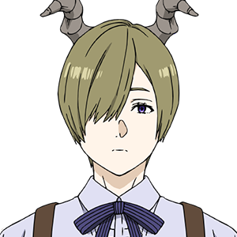
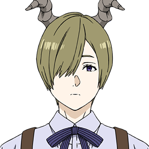

魔王討伐を果たした勇者一行のその後を描く物語。エルフの魔法使いフリーレンは、長寿ゆえに仲間たちが次々と寿命で亡くなる様子を見送りながら、生きる意味を探し始める。亡き仲間たちの遺志を胸に、新たな旅路へと歩み出すフリーレン。その旅の中で、人間の寿命の儚さや、仲間との絆の重みを再認識し、感情を深く理解していく。新たな仲間との出会いが、彼女の旅をさらに彩る。
 

シーズン1 第2クール
晴る / ヨルシカ
Anytime Anywhere / milet